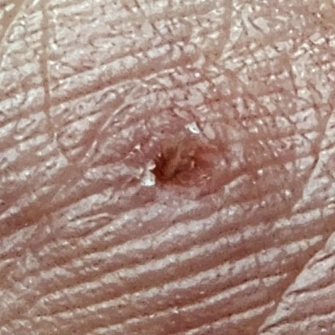
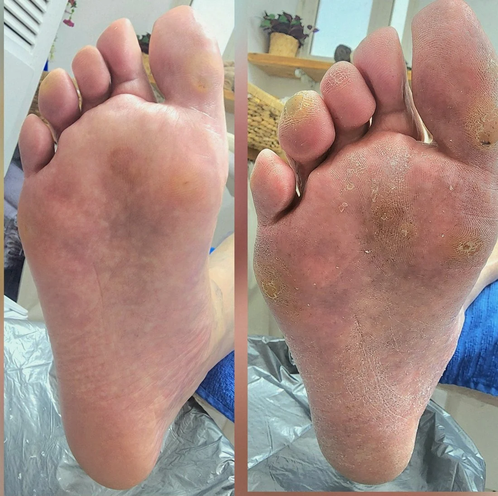
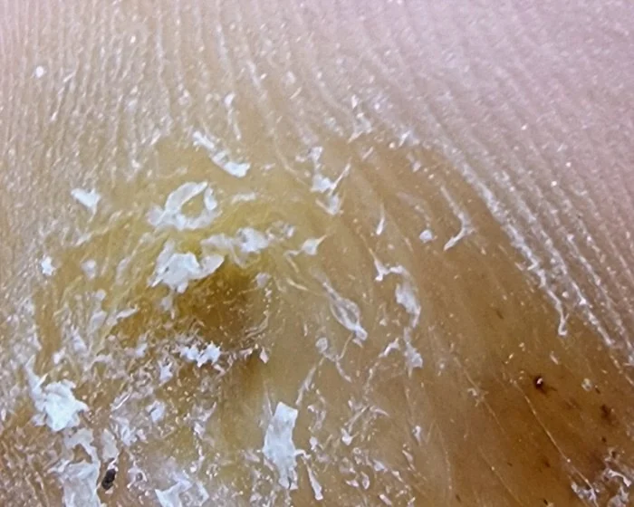
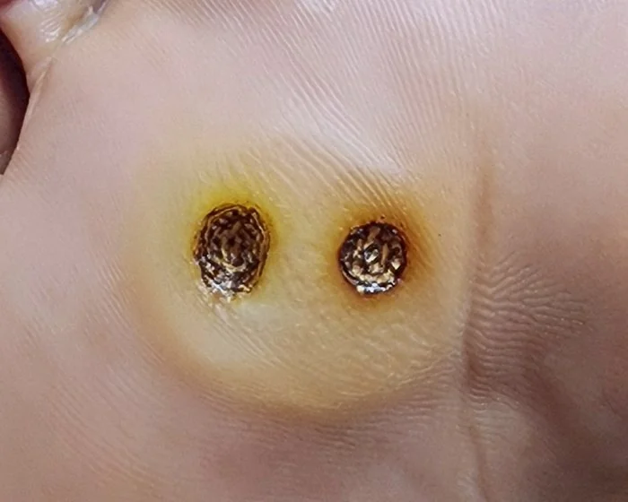

אני בודקת את כף הרגל שלך תחת מנורת הגדלה, ומסתכלת מקרוב על כל הסימנים שהזכרתי למעלה: הנקודות השחורות, קווי העור והצורה הכללית. לפעמים, כדי לראות מה באמת יושב שם מתחת, אני צריכה קודם להוריד בעדינות רבה את שכבת העור הקשה שמלמעלה. רק אחרי שהתמונה ברורה לגמרי, נוכל להחליט יחד על הטיפול המדויק והנכון עבורך.

אני מורידה את העור המעובה ואת הגרעין בעדינות רבה, בעזרת ראש שיוף וניפר מותאמים, וללא שום שימוש בסכין לגילוח עור. לאחר מכן, אנחנו מדברים יחד על מה שגרם ליבלת להיווצר מלכתחילה: מבנה כף הרגל שלך, סוג הנעליים או הלחץ שמופעל על האזור.
חשוב לי להדגיש: בלי החלק השני הזה, היבלת פשוט תיבנה שוב בדיוק באותו המקום. לכן, השלב של מציאת המקור ללחץ הוא קריטי, וחשוב לא פחות מהטיפול עצמו כדי לשמור על רגל בריאה לאורך זמן.

עט הפלזמה יוצר קשת חשמלית זעירה בין המכשיר לעור, שמייבשת את רקמת היבלת בצורה מבוקרת ונקודתית מאוד. לא מדובר בקרן לייזר, אלא בטכנולוגיה שעובדת יותר כמו מחט חשמלית עדינה. כדי להבטיח את התוצאה הטובה והבטוחה ביותר עבורך, אני מתאימה את העוצמה במדויק לגודל היבלת שלך, למיקום ולעומק שלה. המטרה היא לטפל אך ורק ביבלת עצמה ולשמור על העור הבריא שמסביבה, וכל זה נעשה ללא חיתוך, ולרוב גם בלי דימום כלל.
רוב הזמן שלך אצלי בחדר לא מוקדש לטיפול עצמו. בתחילת המפגש אני מורחת משחה מאלחשת שנועדה למנוע כאב, והיא צריכה כ-30 עד 40 דקות כדי להשפיע כמו שצריך. המפגש כולו אורך כ-55 דקות כולל זמן ההמתנה לאלחוש, אז אני ממליצה לפנות שעה ביומן. האלחוש הזה הוא חלק בלתי נפרד מהטיפול, והוא שם בדיוק כדי שתוכל/י לעבור את התהליך ברוגע ובנוחות מקסימלית.
בסיום הטיפול נוצרת על המקום שכבת גלד בצבע שחור-חום. חשוב לי להרגיע מראש: זהו חלק טבעי לחלוטין מתהליך ההחלמה של העור, וממש לא סיבוך. הגלד הזה פשוט מתפקד כשכבת מגן לעור שמתחתיו, ושומר עליו בזמן שהוא מתאושש ומבריא.

לפני אחרי שיוף ראשוני עדין, רגע לפני הטיפול בפלזמה
אחרי הפלזמה הגלד הכהה שנוצר. הוא מתפקד כמעין "פלסטר טבעי" שיגן על העור, ויינשר מעצמו בהמשךכשהשורש של היבלת עמוק, או כשמדובר ביבלת קצת יותר עקשנית, יכול להיות שטיפול אחד לא יספיק ונצטרך מפגש נוסף כדי לפתור את הבעיה מהיסוד. אני מעדיפה שתדע/י את זה כבר עכשיו לפני שמתחילים, כי אני מאמינה בשקיפות מלאה ולא מפזרת הבטחות שווא. מה שאני כן יכולה להבטיח בלב שלם, זה שאני אהיה כאן כדי ללוות אותך באופן אישי לאורך כל הדרך, עד שהרגל תחזור להיות בריאה וחופשיה מכאב.